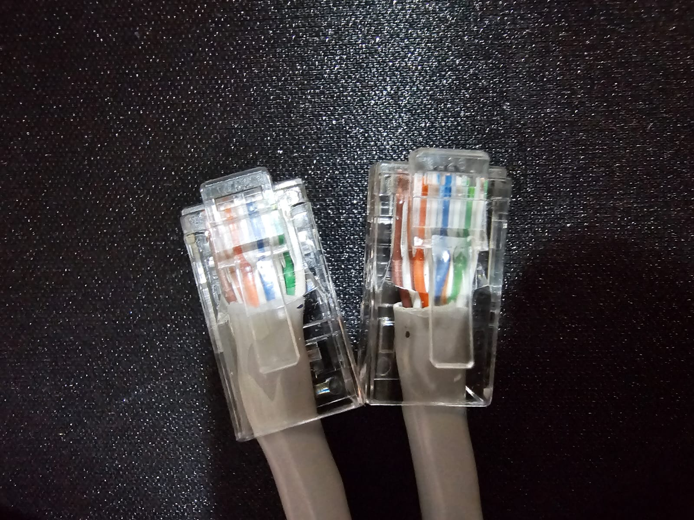
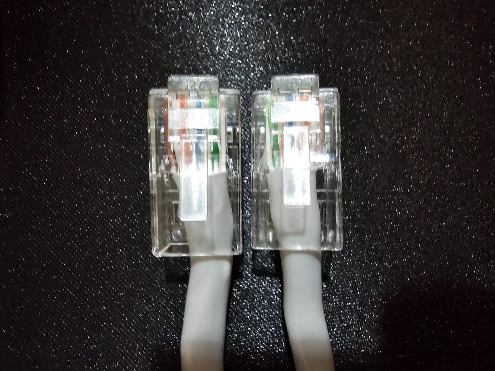

Resumen
Durante la práctica se investigaron las configuraciones de los cables de red estructurados, específicamente los tipos directo y cruzado. Se explicó cómo se prueban ambos tipos de cables utilizando herramientas adecuadas. Posteriormente, se procedió a armar tres cables directos y tres cables cruzados, asegurando su correcto funcionamiento mediante pruebas con un "tester". La actividad permitió reforzar los conocimientos sobre cableado para redes ethernet. Además, se desarrollaron habilidades prácticas en el armado y verificación de cables de red.
Introducción
El cableado estructurado es un componente esencial en el diseño y mantenimiento de redes de computadoras. A pesar del crecimiento de las tecnologías inalámbricas, los cables de red siguen siendo la opción más confiable para garantizar una transmisión de datos estable y segura. Entre los distintos tipos de cables que forman parte de estas redes, los cables directo y cruzado son fundamentales. Aunque ambos comparten las mismas características físicas, su diferencia radica en la disposición de los hilos internos, lo que determina su uso en distintas configuraciones de red. Para comprender esta diferencia es necesario conocer los estándares T-568A y T-568B. Estos estándares definen el orden en el que se organizan los ocho hilos dentro de un conector RJ45. En un cable de red directo, ambos extremos están configurados siguiendo el mismo estándar (ya sea T-568A o T-568B), lo que permite una conexión lineal en la que el Pin 1 de un extremo corresponde con el Pin 1 del otro, y así sucesivamente. Este tipo de cable se utiliza para conectar dispositivos diferentes entre sí, como un computador con un switch, un router o un hub. Gracias a esta configuración, la señal de transmisión (TX) de un dispositivo llega directamente al receptor (RX) del otro. Por otro lado, el cable cruzado emplea diferentes estándares en cada extremo: uno con la disposición T-568A y el otro con T-568B. Esto provoca un cruce de las señales de transmisión y recepción, permitiendo que los dispositivos del mismo tipo, como dos computadoras o dos switches, puedan comunicarse directamente entre sí. En este tipo de conexiones, el Pin 1 de un extremo se conecta con el Pin 3 del otro, y el Pin 2 con el Pin 6, asegurando que las señales TX y RX se crucen adecuadamente. Aunque muchos dispositivos modernos integran funciones de autoajuste (Auto-MDI/MDI-X) que les permiten adaptarse al tipo de conexión, conocer estas diferencias sigue siendo clave, especialmente en redes donde se emplean equipos sin esta capacidad. Entender cuándo utilizar un cable directo o uno cruzado es vital para garantizar la correcta transmisión de datos. Si se utilizan cables incorrectos, los dispositivos podrían no establecer comunicación, lo que provocaría errores de conexión en la red. Por ejemplo, al conectar directamente dos computadoras sin intermediarios como un switch, es necesario un cable cruzado; en cambio, si se conectan mediante un switch, se emplean cables directos entre cada PC y el switch. Este principio también se aplica cuando se conectan switches entre sí o a routers, dependiendo del tipo de dispositivos involucrados.
Material y Equipos
2 metros de cable cat6

10 Metros de cable cat5e

1 Pinza ponchadora

12 Conectores RJ45

1 Tester de cable de red
Desarrollo
Ejercicio 1: Cables directos
Para la elaboración de los cables de red directos, se utilizó cable UTP categoría 5e, conectores RJ45, una ponchadora y un probador de red. Se comenzó cortando un tramo de cable de aproximadamente un metro de longitud. Luego, se pelaron ambos extremos para exponer los ocho hilos internos, los cuales se ordenaron de acuerdo con el estándar T-568A en ambos lados. Esta disposición asegura que los pines de transmisión y recepción estén alineados correctamente para la conexión entre dispositivos diferentes. Una vez alineados y recortados, los hilos se insertaron en los conectores RJ45, se poncharon con la herramienta correspondiente, y finalmente se probó el cable con un tester, verificando la correcta continuidad de todos los pines.
Ejercicio 2: Cables cruzados
Para el armado de cada cable cruzado, se repitieron los primeros pasos: corte del cable, pelado de extremos y separación de hilos. La diferencia estuvo en la disposición de los cables en los conectores. En un extremo se utilizó el estándar T-568A y en el otro el T-568B, logrando así el cruce necesario entre los pines de transmisión y recepción. Esta configuración es ideal para conectar dispositivos del mismo tipo, como dos computadoras directamente entre sí. Tras insertar los hilos en los conectores y asegurarlos con la ponchadora, se utilizó el probador de red para confirmar el cruce de señales. El dispositivo mostró una secuencia alternada de encendido en los LEDs, lo cual indicó que el cruce se había realizado correctamente y que el cable funcionaba de forma adecuada.
Simulación
Ejercicio 1
Diseño
El diseño de los cables de red se basa en la correcta disposición de los hilos internos del cable UTP para asegurar una transmisión de datos eficiente y sin interferencias. En el caso de los cables directos, se utiliza el mismo estándar de conexión (en este caso T-568A) en ambos extremos, lo que permite que los pines de transmisión y recepción estén alineados de forma paralela. Este diseño es ideal para conectar dispositivos diferentes, como computadoras a switches o routers. Por otro lado, el cable cruzado requiere un extremo con el estándar T-568A y el otro con T-568B, lo cual invierte las posiciones de los pines de transmisión y recepción. Este cruce permite la comunicación directa entre dispositivos del mismo tipo, como dos computadoras o dos switches. La verificación con un tester es parte fundamental del diseño, ya que garantiza que la disposición interna de los hilos esté correctamente configurada según el tipo de cable.
Construcción del Circuito
Cable directo (se realizó el mismo pasra 3 cables)

Cable cruzado (se realizó el mismo procedimiento para 3 cables)

Resultados
Durante la elaboración de los cables, se presentaron algunas dificultades, especialmente al trabajar con cables categoría 6. Estos cables resultaron más complicados de manejar debido a su mayor grosor y al recubrimiento interno que protege los pares trenzados, lo que dificultó el proceso de pelado y ordenamiento de los hilos. Sin embargo, con paciencia y cuidado, se logró completar correctamente el armado de los seis cables, tres directos y tres cruzados. Todos los cables fueron ponchados adecuadamente, asegurando que una parte del aislante exterior quedara dentro del conector RJ45. Esto es importante ya que ayuda a mantener la firmeza de la conexión y reduce el riesgo de interferencias electromagnéticas.
Conclusiones
La práctica permitió comprender de manera clara la diferencia entre un cable de red directo y uno cruzado, así como su correcta aplicación según el tipo de conexión. A pesar de las dificultades encontradas, especialmente al trabajar con cables categoría 6 debido a su grosor y recubrimiento interno, se logró armar y probar exitosamente los seis cables requeridos. Esta experiencia reforzó la importancia de seguir los estándares de cableado y de cuidar detalles para el funcionamiento correcto del cableado.
Refrencias
- Fs. (s. f.). ¿Cuál es la diferencia entre cable de red directo y cable de red cruzado? FS.com.
- GeeksforGeeks. (2024, 9 julio). Difference Between Straight Through Cable and Crossover Cable. GeeksforGeeks.
- Lindenphotonics. (2024, 9 septiembre). Understanding Ethernet crossover cables - Linden Photonics Inc. Linden Photonics Inc.